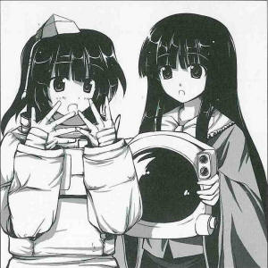

From
this month on, the "Lunar Capital Expo" is being held at Eientei to share
knowledge about the moon.
From
this month on, the "Lunar Capital Expo" is being held at Eientei to share
knowledge about the moon.
Current exhibits include: moon rocks, the flag the humans planted on the moon, and other relics that represent the peak of moon civilization. A show demonstrating the traditional methods moon rabbits use to pound mochi was also being planned.
From the first day, a huge crowd of guests have come to visit, including humans and youkai that have a high level of interest in the moon, with many repeat visitors.
The organizer for this event, Kaguya Houraisan ([self-proclaimed] human) explains its intended purpose.
"Here at home, I have many items related to the moon. For some reason, I felt I needed to keep them to myself at first, but...
Now, I don't mind anymore and I wish for everyone to come pay to see then, since it would be a waste to just hide them away.
If I am able to instill even a little bit of interest in the moon through this expo I will be just filled with elation."
One of the showpieces is the the Moon History Building, where you can learn about the previously unknown history of the Lunar Capital alongside the fascinating tools and vehicles from back then.
There is also an old cart that would fly in the sky despite being pulled by oxen, kimono that continue to shine even now, and a lunar rover that that can travel over any sort of lunar terrain.
It's one of the charms of the Lunar Capital Expo that you can't tell exactly how genuine the exhibits are.
And starting from today, they are holding a moon rabbit mochi-pounding show.
Here, all the participants are given mochi pounded by the moon rabbit. Two hours since the show started, the queue for the show already resembles a long snake.
A (self-proclaimed) rabbit from the moon, Reisen Udongein Inaba (rabbit), said this when she saw the line:
"It doesn't matter who pounds it, mochi still tastes the same.
Just let me take a little break...
I told them this plan wouldn't work, since I'm the only moon rabbit here..."
If it becomes too disorderly due to the popularity, they may have a different event for tomorrow.
On the other hand, if they do plan an exciting new event, it may help keep visitors from getting bored.
The Lunar Capital Expo is like a fantastic virtual tour of the moon.
Before winter comes, why not come over and see it?
 Aya
The Lunar Capital Expo ended with great success, but what did you think of it?
Kaguya
It went so well, I wouldn't mind having it every year.
Aya
Since the rabbit's mochi was so extremely delicious, I'd like to write a review of it next time, seeing as the article on the expo was well received.
Kaguya
Well, we haven't decided if we're going to hold another one, but if we do it, I'll let you know.
Aya
Anyway, you had many strange things that have never been seen before on display. How did you get a hold of all of them?
Kaguya
I just all of a sudden remember that I have them. My house is full of ancient things that haven't even been touched since the time when I last saw them.
Aya
So how long ago would that be?
Kaguya
Very, very long ago.
Aya
Let's see... you said these were all items from the moon, but they don't look that out-of-the-ordinary to me...
Kaguya
Oh, are you saying that I was cheating people?
Aya
Well, that's how exhibitions usually go. These kinds of events are good times to use cheating and trickery.
Kaguya
There are a lot of people like that these days. They just have to see through the cheating with your own cheating to enjoy the fabrication. A story is a story. But if there are unbelievable truths mixed in with the lies, would they still see through it?
Aya
In certain situations, you can.
Kaguya
Well, then, what is your honest opinion of the expo?
Aya
Well, I can't say for sure, but there seemed to be some fake items mixed in.
Kaguya
I see, it looks like you suspect everything unless you see it with your own eyes. You seem like the kind of person who doesn't believe that humans went to the moon, or thinks the Earth is flat.
Aya
That's a cruel way of wording it.
Kaguya
Regarding the Lunarians descending to the surface, does it matter if it really happened?
Aya
To begin, the part where I felt was kind of fake wasn't that.... or maybe it was?
Kaguya
Hmmm, it would be nice if it were.
Aya
Let's leave that topic aside, why do you have so many things that relate to the moon?
Kaguya
Good question...
Aya
What was on exhibit at the Lunar Capital Expo is about average among others with similar tastes for the fantastic.
Kaguya
Yes, that is true. A taste for the fantastic has been part of my lineage for a very long time.
Aya
However I think of it, nobody would even think of collecting such strange things. Normal people, that is.
Kaguya
Really? There were several times where we were almost robbed during the exhibition, you know? Though our rabbit security force prevented that from happening.
Aya
Those with fantastic tastes are everywhere....
Kaguya
It's because Earth is like a place where the curious gather.
Profile:
Kaguya Houraisan
Princess of the moon that lives in hiding on Earth due to the crime she has committed.
In order to avoid contact with the Lunar Emissaries, she made Eirin Yagokoro hide the full moon, but...
Appearances:
Imperishable Night